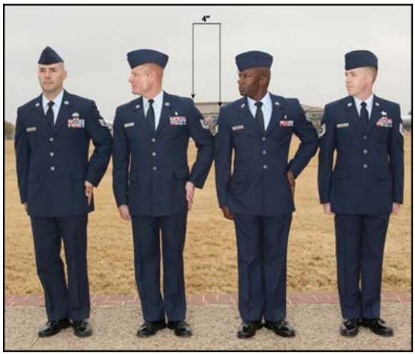

Formation of a flight. Line and inverted line formation. Column and inverted column formation.
'Close Interval' and 'Close or Extend March' also on this page.
At Close Interval, Dress Right (Left), DRESS is not given to a flight at normal interval, and Dress Right (Left), DRESS is not given to a flight at close interval.
A flight forms in at least two, but not more than four, elements in line formation. The command is FALL IN.
The command is FALL IN. On this command, the guide takes a position facing the flight commander and to the flight commander's left so the first element will fall in centered on and three paces from the flight commander. Once halted at the position of attention, the guide performs an automatic dress right dress.
When the guide feels the presence of the first element leader on their fingertips, the guide executes an automatic ready front. Once positioned, the guide does not move.
The first element leader falls in directly to the left of the guide and, once halted, executes an automatic dress right dress. The second and third element leaders fall in behind the first element leader, execute an automatic dress right dress, visually establish a 40-inch distance, and align themselves directly behind the individual in front of them. The remaining cadets fall into any open position to the left of the element leaders and execute an automatic dress right dress to establish dress and cover.
To establish interval, the leading individual in each file obtains exact shoulder-to-fingertip contact with the individual to their immediate right.
As soon as dress, cover, interval, and distance are established, each cadet executes an automatic ready front on an individual basis and remains at the position of attention.
Once it is formed, the flight will be squared off prior to sizing. The left flank of the formation will be squared off with extra cadets filling in from the third to the first element.
The commands are Dress Right, DRESS and Ready, FRONT. On the command DRESS, everyone except the last cadet in each element raises and extends the left arm laterally from the shoulder with snap so the arm is parallel with the ground. As the arm is raised, un-cup the hand at approximately waist level, keeping the palm down. Extend and join the fingers and place the thumb along the forefinger. At the same time as the left arm is raised, each individual (except the guide and second, third, and fourth element leaders) turns head and eyes 45 degrees to the right with snap. The leading individual of each file establishes normal interval (by taking small choppy steps and aligning with the base file) and establishes exact shoulder-to- fingertip contact with the individual to the immediate right. The second, third, and fourth element leaders align themselves directly behind the person in front of them (using small choppy steps) and visually establish a 40-inch distance. As the remaining members align themselves behind the individual in front of or to the right of them, their shoulders may or may not touch the fingertips of the individual to their right. If the arm is too long, place the extended hand behind the shoulder of the individual to the left. If the arm is too short, leave it extended toward the individual to the left and parallel to the ground. Oncedress, cover, interval, and distance have been established, the command Ready, FRONTwill be given. On this command, cadets whose arms are up will lower their arms withsnap to their sides (without slapping their sides) and re-cup their hands when their arm isat approximately waist level. As the arm is lowered, cadets whose heads are turned willreturn their heads to the front with snap. The body is now back to the position ofattention.
To form at close interval, the command is At Close Interval, FALL IN. On the command FALL IN, the movement is executed.
On this command, the guide takes a position facing the flight commander and to the flight commander left so the first element will fall in centered on and three paces from the flight commander. Once halted at the position of attention, the guide performs an automatic dress right dress. When the guide feels the presence of the first element leader on his or her fingertips, the guide executes an automatic ready front. Once positioned, the guide does not move.
The first element leader falls in directly to the left of the guide and, once halted, executes an automatic dress right dress at close interval. The second and third element leaders fall in behind the first element leader, execute an automatic dress right dress at close interval, visually establish a 40-inch distance between elements, and align themselves directly behind the individual in front of them. The remaining cadets fall into any open position to the left of the element leaders and execute an automatic dress right dress at close interval to establish dress and cover.
The only commands that may be given while the flight is in this formation are At Close Interval, Dress Right, DRESS; Ready, FRONT; AT EASE; ATTENTION; FALL OUT; and DISMISSED.
The command is At Close Interval, Dress Right, DRESS. On this command, all cadets except the last one in each element will raise their left hand so the heel of the hand rests on the left hip, fingers are extended and joined, thumb is along the forefinger, fingertips point toward the ground, and the elbow in line with the body.
At the same time the left hand is raised, all cadets except the guide and second and third element leaders will turn their head and eyes 45 degrees to the right.
First element cadets establish the interval by ensuring their upper right arm touches the extended elbow of the individual to their right. The same procedures used to establish dress, cover, interval, and distance for normal interval will be used for close interval.
To obtain close interval between files when in column at normal interval at a halt or while marching at quick time, the command is Close, MARCH. To obtain normal interval from close interval, the command is Extend, MARCH.
On the command MARCH, the third element stands fast. The remaining elements take the required number of right steps, all at the same time, and halt together. The second element takes two steps, the first element takes four steps.
On the command MARCH, which is given on the right foot, the third element takes up the half step (beginning with the left foot) following the command of execution. The second element obtains close interval by pivoting 45 degrees to the right on the ball of the left foot, taking one 24-inch step (with coordinated arm swing) toward the third element, and then pivoting 45 degrees back to the left on the ball of the right foot. The first element takes three steps between pivots. The original direction of march is resumed; the half step is taken up once close interval is obtained; and dress, cover, interval, and distance are reestablished. On the command Forward, MARCH, all elements resume a 24-inch step.
Reverse the procedures used to obtain close interval to obtain normal interval.
The same procedures and steps used to obtain close interval are used except the command is given on the left foot and the pivots are made on the right foot.